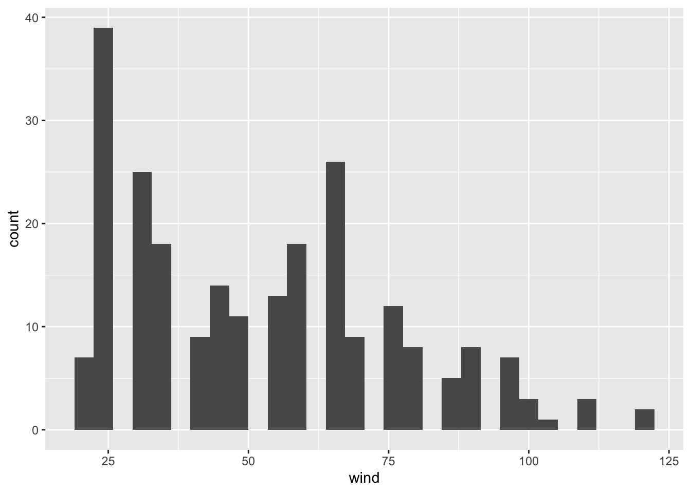
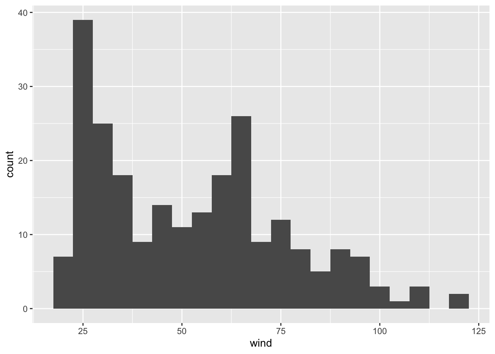
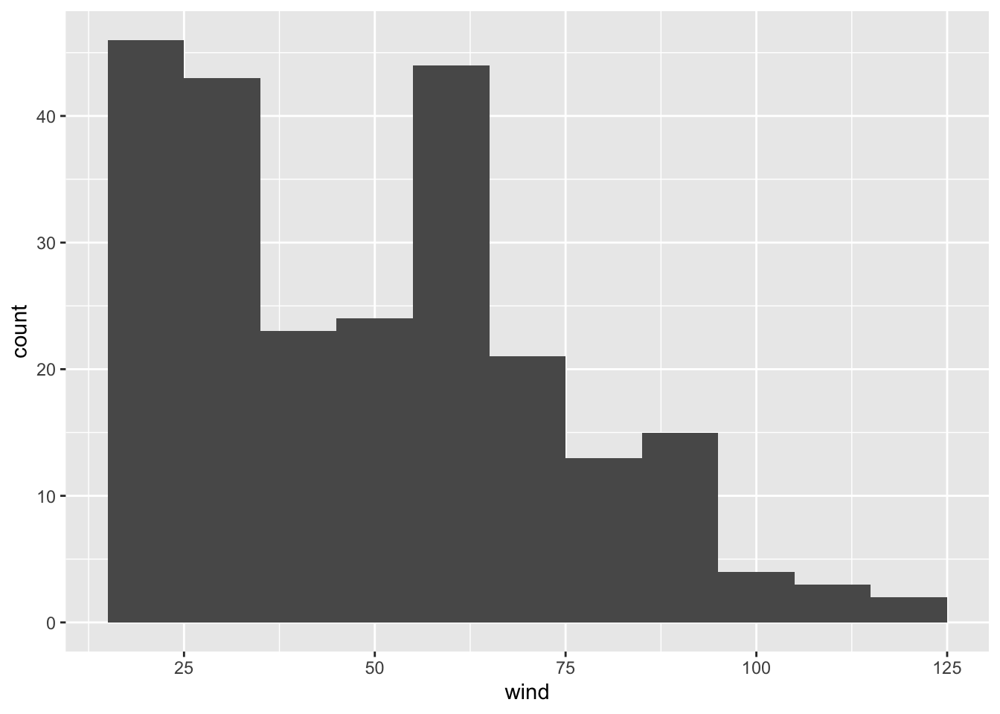
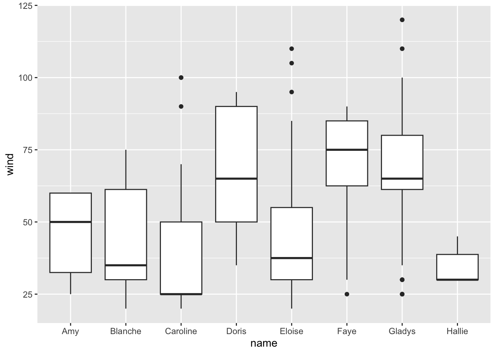
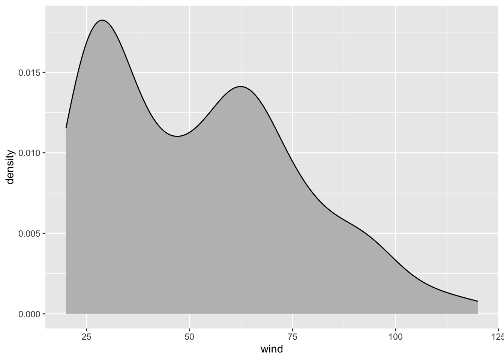
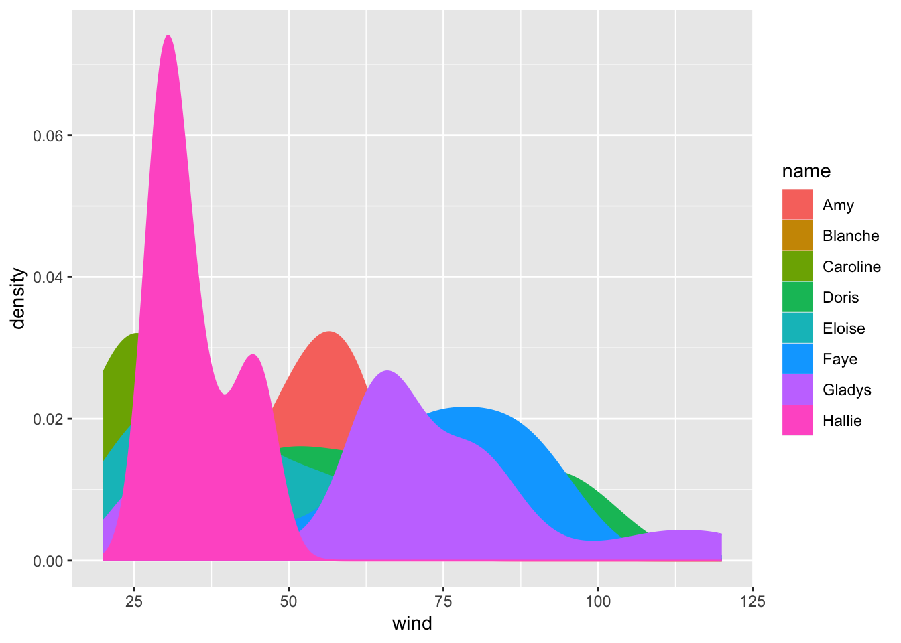
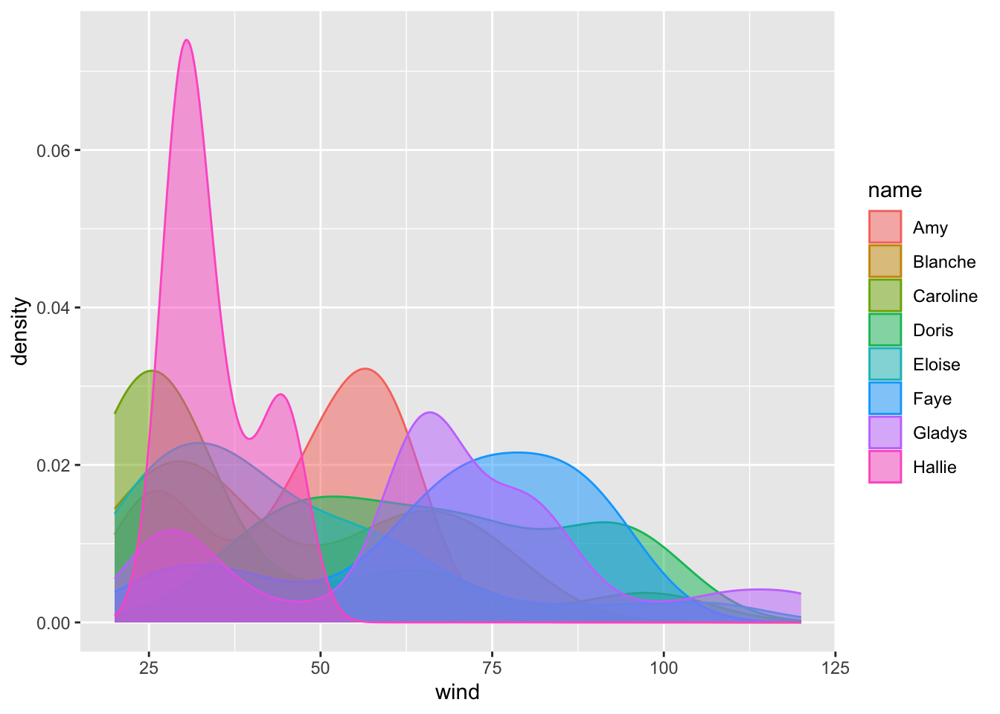
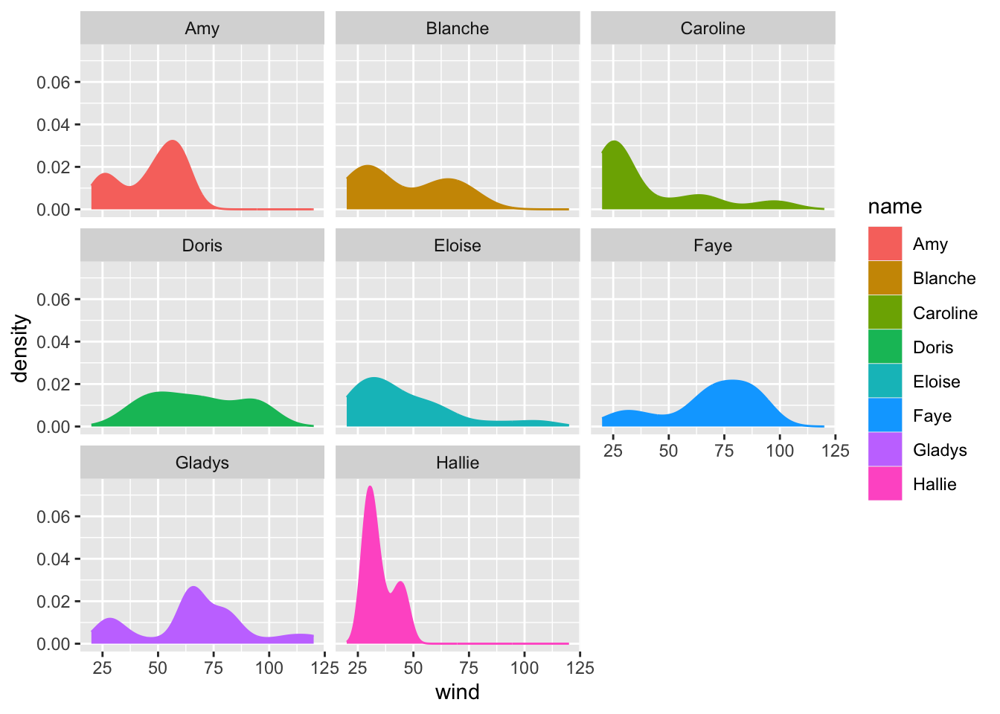
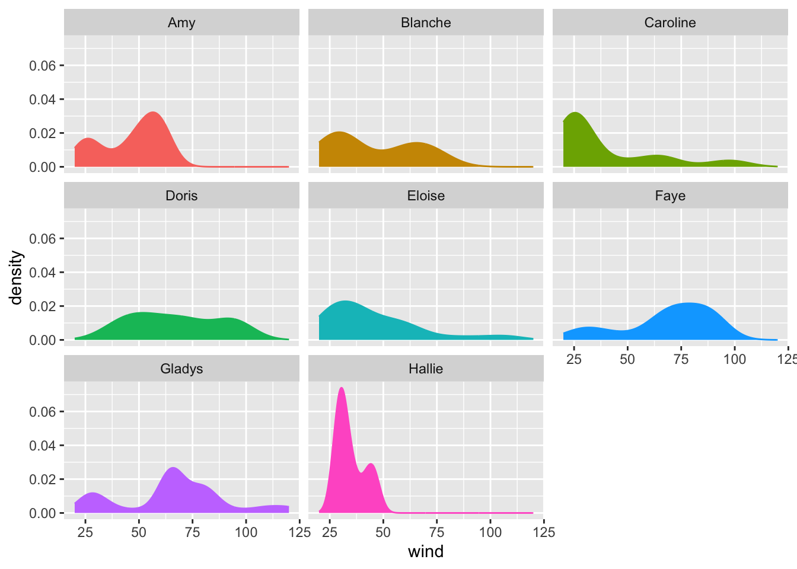

8 Storms in 1975
Let’s focus on those storms recorded in 1975. How do we select them? Computationally, this operation involves a logical condition: year == 1975. This condition means that, from all the available year values, we get those that match 1975. This is done via "dplyr" function filter()
First, let’s create a subset storms75 by filtering those rows with year equal to 1975:
storms75 <- filter(storms, year == 1975)
storms75# A tibble: 238 × 13
name year month day hour lat long status category wind pressure
<chr> <dbl> <dbl> <int> <dbl> <dbl> <dbl> <fct> <dbl> <int> <int>
1 Amy 1975 6 27 0 27.5 -79 tropical d… NA 25 1013
2 Amy 1975 6 27 6 28.5 -79 tropical d… NA 25 1013
3 Amy 1975 6 27 12 29.5 -79 tropical d… NA 25 1013
4 Amy 1975 6 27 18 30.5 -79 tropical d… NA 25 1013
5 Amy 1975 6 28 0 31.5 -78.8 tropical d… NA 25 1012
6 Amy 1975 6 28 6 32.4 -78.7 tropical d… NA 25 1012
7 Amy 1975 6 28 12 33.3 -78 tropical d… NA 25 1011
8 Amy 1975 6 28 18 34 -77 tropical d… NA 30 1006
9 Amy 1975 6 29 0 34.4 -75.8 tropical s… NA 35 1004
10 Amy 1975 6 29 6 34 -74.8 tropical s… NA 40 1002
# ℹ 228 more rows
# ℹ 2 more variables: tropicalstorm_force_diameter <int>,
# hurricane_force_diameter <int>Once we have the set of storms that occurred in 1975, one possible question to ask is what unique() storms happened in that year:
unique75 <- unique(pull(storms75, name))
unique75[1] "Amy" "Blanche" "Caroline" "Doris" "Eloise" "Faye" "Gladys"
[8] "Hallie" From the returned output, there are 8 unique storms recorded in 1975.
Recall that a similar result can be obtained with distinct(), the difference being the way in which the output is returned, in this case under the format of a tibble:
distinct(storms75, name)# A tibble: 8 × 1
name
<chr>
1 Amy
2 Blanche
3 Caroline
4 Doris
5 Eloise
6 Faye
7 Gladys
8 Hallie Now that we know there are three storms for 1975, it would be nice to count the number of rows or entries for each of them. "dplyr" allows us to do this with count(), passing the name of the table, and then the name of the column for which we want to get the counts or frequencies for:
count(storms75, name)# A tibble: 8 × 2
name n
<chr> <int>
1 Amy 31
2 Blanche 20
3 Caroline 33
4 Doris 29
5 Eloise 46
6 Faye 19
7 Gladys 46
8 Hallie 148.1 Visualizing 1975 data
Let’s play a bit with those storms from 1975. More specifically, let’s visually explore the values of columns wind and pressure.
select(storms75, name, wind, pressure)# A tibble: 238 × 3
name wind pressure
<chr> <int> <int>
1 Amy 25 1013
2 Amy 25 1013
3 Amy 25 1013
4 Amy 25 1013
5 Amy 25 1012
6 Amy 25 1012
7 Amy 25 1011
8 Amy 30 1006
9 Amy 35 1004
10 Amy 40 1002
# ℹ 228 more rowsWhat type of visual display can we use to graph wind speed? The answer to this question is based by determining which type of variable wind is. You would agree with us in saying that wind is a quantitative variable. So one graphing option can be either a histogram or a boxplot, which are statistical charts to visualize the distribution of quantitative variables.
8.1.1 Histograms
Let’s begin with a histogram. The associated geom_() function to plot a histogram is geom_histogram(). We are going to show you a syntax of ggplot() slightly different from the one we used for the barcharts. Carefully review the following code:
ggplot(data = storms75, aes(x = wind)) +
geom_histogram()`stat_bin()` using `bins = 30`. Pick better value with `binwidth`.
You should notice now that aes() is an argument of ggplot(), and not anymore an argument of the geometric-object function geom_histogram(). While this may be a bit confusing when learning about "ggplot2", it is a very flexible and powerful behavior of aes(). Again, the important part of aes() is to understand that this function allows you to tell ggplot() which variables in your data table are used as visual attributes of the corresponding geometric elements forming the plot.
We can change the default argument binwidth to get another version of the histogram, for example a bin-width of 5 units (i.e. width of 5 knots):
ggplot(data = storms75, aes(x = wind)) +
geom_histogram(binwidth = 5)
or a bin-width of 10:
ggplot(data = storms75, aes(x = wind)) +
geom_histogram(binwidth = 10)
Now, let’s reflect on what’s going on in each of the histograms. Do they make sense? How do we interpret each figure?
8.1.2 Boxplots
While ggplot() does what we ask it to do, the displays may not be the most useful, or meaningful. Why? Think what exactly it is that we are plotting. We know that in 1975 we have the following storms:
unique75[1] "Amy" "Blanche" "Caroline" "Doris" "Eloise" "Faye" "Gladys"
[8] "Hallie" None of the histograms are differentiating between any of the above storms. Rather, the visualization is just giving us a general view of the wind values, from the low 20’s to the 120’s, or to be more precise:
summary(pull(storms75, wind)) Min. 1st Qu. Median Mean 3rd Qu. Max.
20.00 30.00 50.00 52.42 65.00 120.00 However, we don’t really know if all the storms have the same minimum wind speed, or the same maximum wind speed. The good news is that we can tell ggplot() to take into account each different storm name. But now let’s use boxplots via geom_boxplot(), mapping name to the x-axis, and wind to the y-axis.
ggplot(data = storms75, aes(x = name, y = wind)) +
geom_boxplot()
Note how different the distribution of wind speed is in each storm. We can get an alternative plot with density curves thanks to the geom_density() function. The syntax in this case is different. Let’s first do it without separating storms, and then we do it taking into account the storm names.
8.1.3 Density Curves
Here’s the command that plots a density curve of wind, without distinguishing between storms. Observe also how the argument fill is set to color 'gray':
ggplot(data = storms75, aes(x = wind)) +
geom_density(fill = 'gray')
As you can tell, the density curve looks like the profile of a roller coaster, or like the silhouette of two mountain peaks. Is this a pattern followed by wind speed in all storms? Or is it just an artifact due to the fact that we are plotting data without taking into consideration the context of storms75?
Let’s replot density of wind, but now distinguishing between each storm. We do this by mapping name to the color argument:
ggplot(data = storms75, aes(x = wind, color = name)) +
geom_density(aes(fill = name))
Aha! Now things look more interesting: the roller coaster shape of the first call to geom_density() turned out to be an artificial pattern. As you can tell from the above plot, each storm has its own different density curve.
To get a better visualization, we can take the previous command and add a bit of transparency to the colors, this is done with the argument alpha inside geom_density(). Note how arguments are specified inside geom_density(): we map name to the color-fill attribute of the curve inside aes(), but we set alpha = 0.5 outside aes():
ggplot(data = storms75, aes(x = wind, color = name)) +
geom_density(aes(fill = name), alpha = 0.5)
8.1.4 Facets
We are going to take advantage of the preceding graphic to introduce another cool feature of "ggplot2" that allows us to split data based on categorical or discrete variables, in order to produce separated frames called facets.
Below is the previous command—without alpha transparency—adding a new layer given by facet_wrap() taking into account the name of the storms:
ggplot(data = storms75, aes(x = wind, color = name)) +
geom_density(aes(fill = name)) +
facet_wrap(~ name)
In this command we are creating facets by name. This means that we obtain a facet for each unique category of name. In other words, we get separated density curves, one for each storm. The syntax inside facet_wrap() uses the tilde ~ operator which is the formula operator in R. Basically, the command ~ name tells ggplot() to create facets “based on” or “conditioning on” the values of name.
Here’s a question for your: Which of the three storms in 1975 was the strongest one (in terms of the amount of sustained wind speeds)?
The legend may be a bit redundant in this graphic. We can hide it by using the function theme() and the argument legend.position = "none"
ggplot(data = storms75, aes(x = wind, color = name)) +
geom_density(aes(fill = name)) +
facet_wrap(~ name) +
theme(legend.position = "none")